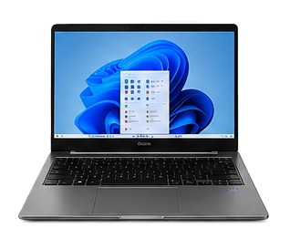
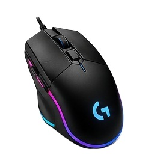
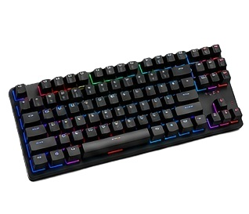

Notebook Core i5
Notebook par atividades escolares e profissionais.
- Categoria: Computadores
- Uso sugerido: estudo
Uma atividade prática com HTML, CSS, JavaScript, MySQL, API e Insomnia.
Nesta página serão exibidos produtos de tecnologia organizados em cads. Ao clicar em cada produto, será possivel visualizar mais detalhes.

Notebook par atividades escolares e profissionais.

Mouse RGB com botões programáveis e alta precisão.

Teclado com switches mecânicos e alta durabilidade.
Este projeto tem como objetivo revisar conceitos de desenvolvimento web, banco de dados, API e testes com Insomnia.